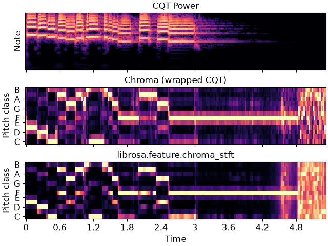

librosa.filters.cq_to_chroma
- librosa.filters.cq_to_chroma(n_input, *, bins_per_octave=12, n_chroma=12, fmin=None, window=None, base_c=True, dtype=<class 'numpy.float32'>)[source]
Construct a linear transformation matrix to map Constant-Q bins onto chroma bins (i.e., pitch classes).
- Parameters:
- n_inputint > 0 [scalar]
Number of input components (CQT bins)
- bins_per_octaveint > 0 [scalar]
How many bins per octave in the CQT
- n_chromaint > 0 [scalar]
Number of output bins (per octave) in the chroma
- fminNone or float > 0
Center frequency of the first constant-Q channel. Default: ‘C1’ ~= 32.7 Hz
- windowNone or np.ndarray
If provided, the cq_to_chroma filter bank will be convolved with
window.- base_cbool
If True, the first chroma bin will start at ‘C’ If False, the first chroma bin will start at ‘A’
- dtypenp.dtype
The data type of the output basis. By default, uses 32-bit (single-precision) floating point.
- Returns:
- cq_to_chromanp.ndarray [shape=(n_chroma, n_input)]
Transformation matrix:
Chroma = np.dot(cq_to_chroma, CQT)
- Raises:
- ParameterError
If
n_inputis not an integer multiple ofn_chroma
Notes
This function caches at level 10.
Examples
Get a CQT, and wrap bins to chroma
>>> y, sr = librosa.load(librosa.ex('trumpet')) >>> CQT = np.abs(librosa.cqt(y, sr=sr)) >>> chroma_map = librosa.filters.cq_to_chroma(CQT.shape[0]) >>> chromagram = chroma_map.dot(CQT) >>> # Max-normalize each time step >>> chromagram = librosa.util.normalize(chromagram, axis=0)
>>> import matplotlib.pyplot as plt >>> fig, ax = plt.subplots(nrows=3, sharex=True) >>> imgcq = librosa.display.specshow(librosa.amplitude_to_db(CQT, ... ref=np.max), ... y_axis='cqt_note', x_axis='time', ... ax=ax[0]) >>> ax[0].set(title='CQT Power') >>> ax[0].label_outer() >>> librosa.display.specshow(chromagram, y_axis='chroma', x_axis='time', ... ax=ax[1]) >>> ax[1].set(title='Chroma (wrapped CQT)') >>> ax[1].label_outer() >>> chroma = librosa.feature.chroma_stft(y=y, sr=sr) >>> imgchroma = librosa.display.specshow(chroma, y_axis='chroma', x_axis='time', ax=ax[2]) >>> ax[2].set(title='librosa.feature.chroma_stft')
